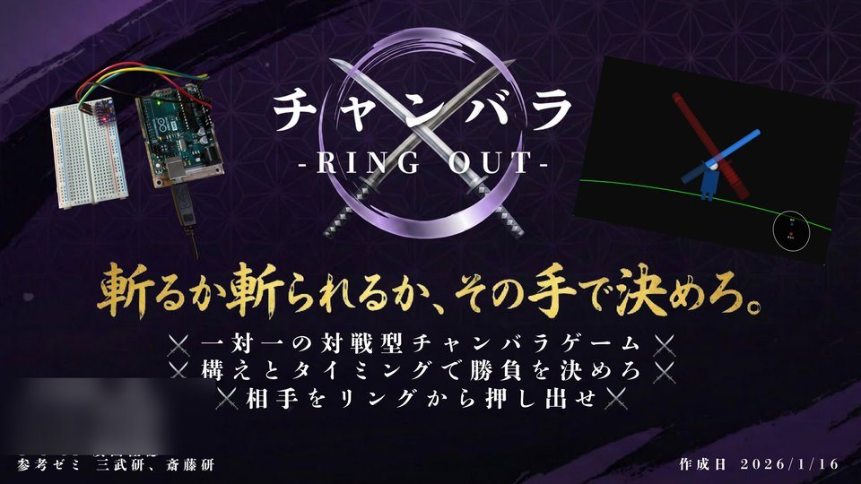
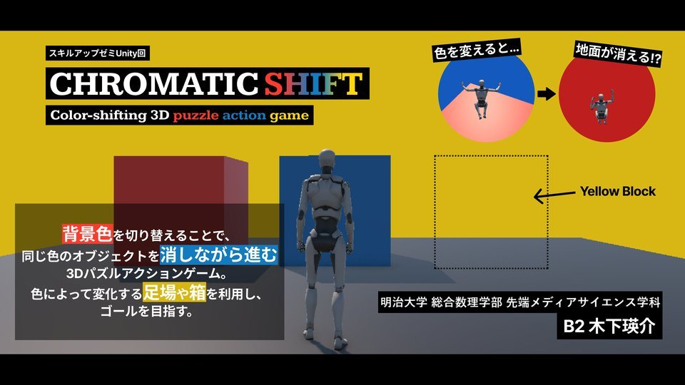
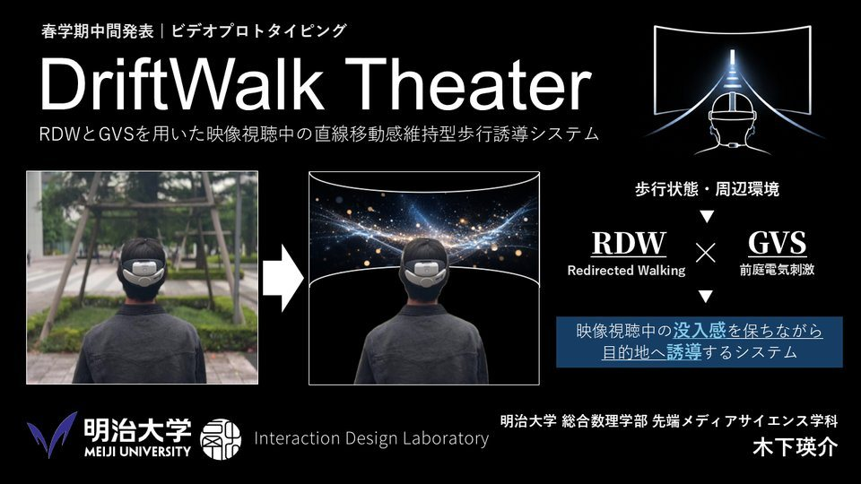
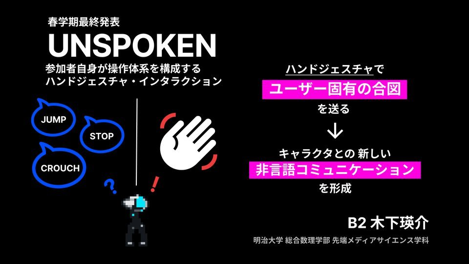
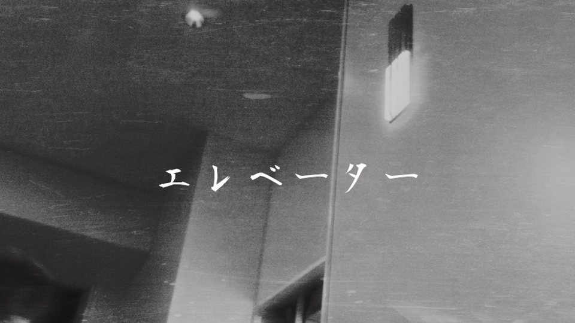
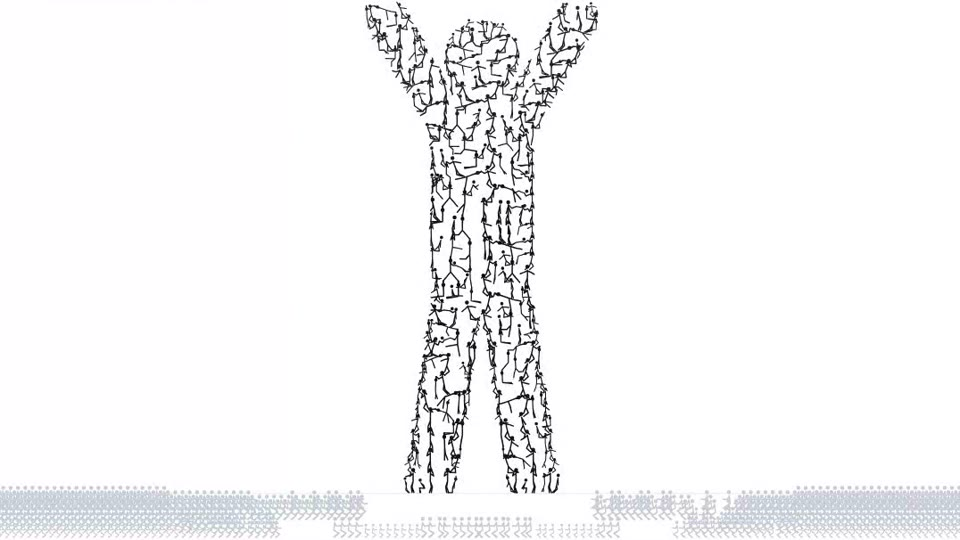
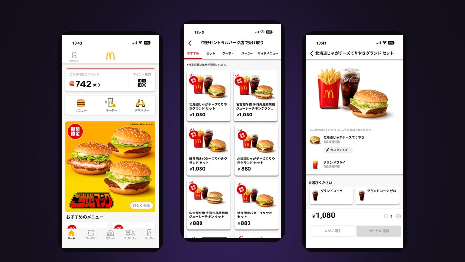
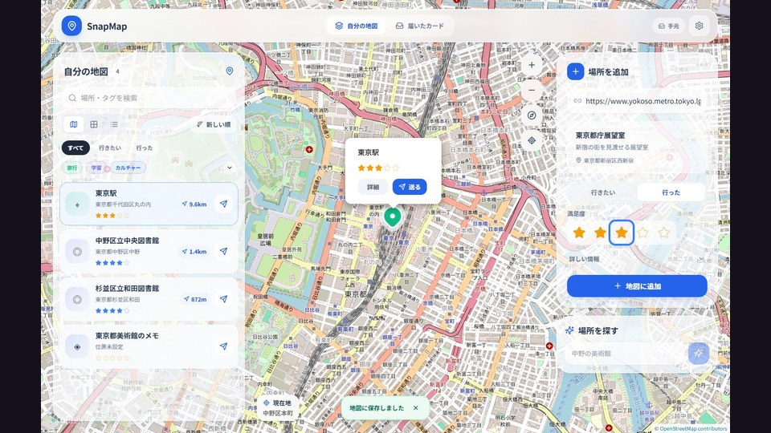
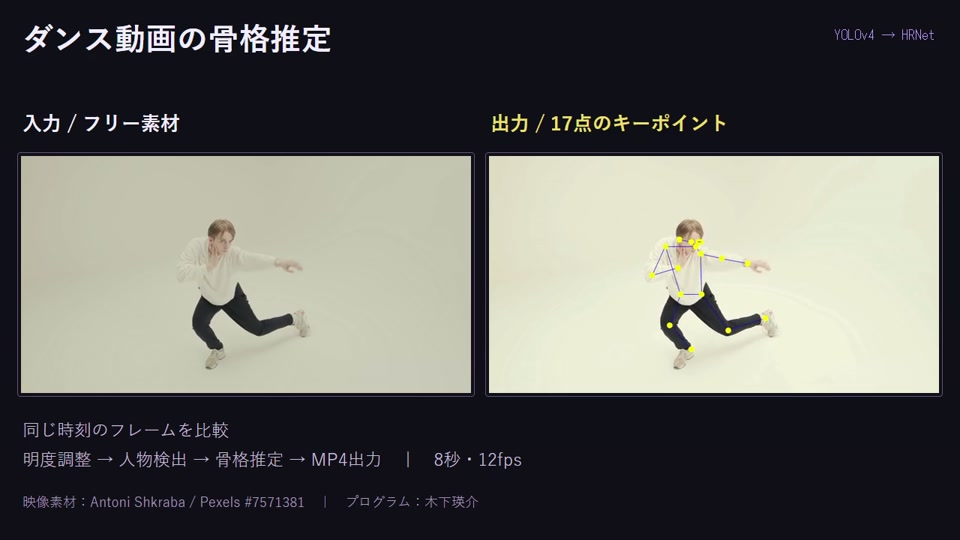

01
PLAY

ScrumCanvas
ラグビーの
01 — About
趣味は
特技はラグビーで、中学1年から高校1年まで続けました。ラグビーの経験は、作品「ScrumCanvas」の題材にもなっています。小学生のときには空手（琉球少林流空手道 月心会）で少年少女初段を取得しました。
いまは塾講師のアルバイトをしていて、その勤怠管理システムも自分でつくっています。
02 — Works
ラグビーの

自作の

背景色を

RDWと

参加者自身が

作業を

ポーズを

Figma でマクドナルド公式アプリの30画面と画面遷移を完全再現したプロトタイプ

気になる場所のURLをカードにして、地図に保存・共有するWebアプリ

人物検出と17点の骨格推定を組み合わせ、動画の動きを可視化
03 — History
04 — Skills
05 — Contact
作品の感想、制作やインターンのご相談、「一緒に何かつくりませんか」というお誘いまで。どんなことでも、お気軽にご連絡ください。